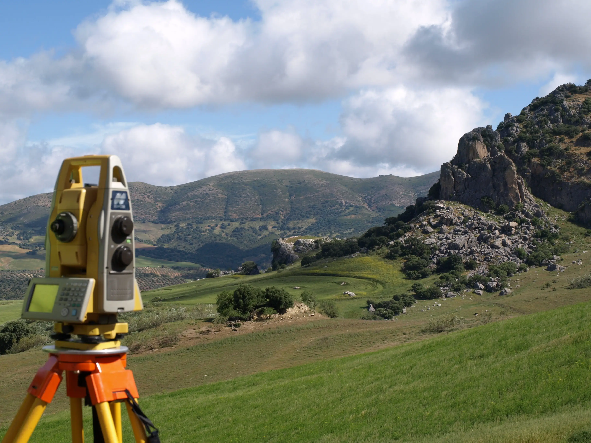
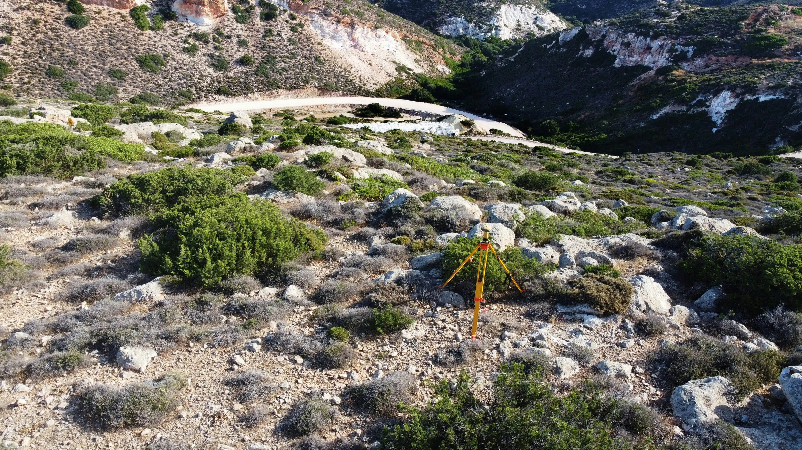

Avant tout projet de construction, division de terrain ou immatriculation foncière à l'ANCFCC, une étape est souvent incontournable : le levé topographique. Pourtant, nombreux sont les propriétaires qui ne savent pas exactement en quoi il consiste, combien il coûte ou dans quels cas précis il est requis.
Dans ce guide, STOPSIT vous explique tout — de la définition aux étapes concrètes sur le terrain.

Qu'est-ce qu'un levé topographique ?
Un levé topographique est une opération de mesure précise qui vise à représenter fidèlement un terrain sur un plan. Il capture l'ensemble des caractéristiques physiques d'une parcelle :
- Le relief : altitudes, pentes, courbes de niveau
- Les limites de propriété : bornes, clôtures, murs mitoyens
- Les constructions existantes : bâtiments, murs, dalles
- La végétation remarquable : arbres isolés, haies
- Les réseaux : voiries, canalisations visibles, conduites d'eau
Le résultat final est un plan topographique coté, conforme aux normes de l'ANCFCC, qui constitue la base de tout dossier cadastral ou de construction sérieux.
- Pour tout dossier technique cadastral (DTC) soumis à l'ANCFCC (immatriculation, morcellement, fusion…)
- Pour toute opération de lotissement ou de division foncière
- Pour une demande de permis de construire, la commune exige généralement une demande d'attestation de borne — le levé topographique complet peut aussi être demandé selon les cas
- Pour tout projet de construction nécessitant une connaissance précise du relief ou des limites
Permis de construire : borne ou levé topographique ?
C'est une question que nos clients posent souvent. Pour une demande de permis de construire, ce que la commune et les services d'urbanisme exigent en pratique, c'est généralement une demande d'attestation de borne (ou attestation de bornage). Ce document certifie que les limites physiques du terrain ont été matérialisées par un ingénieur géomètre-topographe agréé.
Le levé topographique complet — avec courbes de niveau, relief détaillé et représentation exhaustive du terrain — est quant à lui indispensable pour les dossiers ANCFCC, les projets de lotissement, et tout projet de construction sur terrain complexe (terrain en pente, grandes superficies, projets nécessitant un calcul de terrassement).
En cas de doute sur ce que votre dossier nécessite exactement, STOPSIT peut vous orienter rapidement vers la bonne prestation.
Pourquoi faire appel à un professionnel agréé ?

Au Maroc, seul un ingénieur géomètre-topographe inscrit à l'Ordre des Ingénieurs Géomètres-Topographes est habilité à réaliser un levé topographique recevable par l'ANCFCC et les administrations compétentes.
Les instruments utilisés — GPS GNSS (Kolida, Trimble, CHC Huace) et stations totales SOKKIA — permettent d'atteindre une précision centimétrique, garantissant la fiabilité des coordonnées relevées.
Un levé réalisé par un non-professionnel ou avec des outils insuffisants sera systématiquement rejeté lors du dépôt du dossier cadastral, entraînant des pertes de temps et des surcoûts évitables.
Les 4 étapes d'un levé topographique
-
Reconnaissance du terrain
Visite préalable pour évaluer l'accessibilité, la végétation dense, la présence de réseaux souterrains et estimer la complexité de la mission. C'est à cette étape qu'est établi le devis définitif.
-
Collecte des données sur le terrain
Implantation des points de repère (canevas), mesure des angles et des distances avec la station totale, relevé des coordonnées GPS des limites et des détails. Pour un terrain de 1 000 m², l'opération dure généralement une demi-journée.
-
Traitement informatique des données
Post-traitement des données GNSS avec Trimble Business Center (TBC), dessin du plan sous AutoCAD / COVADIS, calcul des superficies, génération des courbes de niveau et vérifications de cohérence.
-
Livraison du plan signé et cacheté
Remise du plan topographique au format papier (A3/A0 selon la superficie) et numérique (DWG + PDF), signé par l'ingénieur géomètre-topographe responsable et revêtu de son cachet professionnel.
Quel est le coût d'un levé topographique au Maroc ?
Le tarif d'un levé topographique dépend de plusieurs facteurs :
- La superficie du terrain (en m² ou en ha)
- L'accessibilité : terrain en ville versus zone rurale enclavée
- Le relief : terrain plat versus terrain accidenté
- La destination du plan : simple levé de situation ou dossier cadastral complet
STOPSIT établit des devis gratuits et personnalisés sous 24 heures. Il suffit de nous indiquer la superficie approximative du terrain, sa localisation et l'objet du levé. Appelez le +212 661-688603 ou écrivez à stopsit.sarl@gmail.com.
Levé topographique et dossier cadastral : quelle différence ?
Le levé topographique est une composante du dossier technique cadastral, mais les deux termes ne sont pas synonymes :
- Le levé topographique produit un plan représentant fidèlement le terrain (relief, limites, constructions).
- Le dossier technique cadastral (DTC) comprend le levé topographique plus l'ensemble des pièces administratives et graphiques exigées par l'ANCFCC pour l'immatriculation ou la mise à jour du titre foncier.
Pour une immatriculation foncière, il faut donc les deux. STOPSIT prend en charge la totalité du dossier de A à Z.
Conclusion
Le levé topographique est la première brique de tout projet foncier sérieux au Maroc. Réalisé par un professionnel agréé, il protège votre investissement, évite les litiges de voisinage et garantit la conformité de votre dossier auprès des administrations.
Avec plus de 2 900 dossiers cadastraux traités depuis 2005 et une équipe d'ingénieurs géomètres-topographes agréés, STOPSIT est votre partenaire de confiance à Kénitra et dans tout le Maroc.